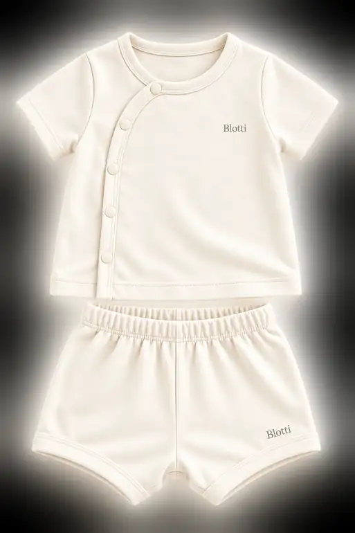

Every little detail,
thoughtfully explained.
From finding the right size to caring for everyday favorites, we want the practical things to feel simple.
Explore customer care
This page outlines the customer-care approach proposed for Blotti's Vietnam launch. Since ordering is not yet open, delivery speeds, exchange terms, service contacts and prices are indicative and will be confirmed before any purchase is accepted.
From our hands
to your little world.
Our proposed delivery experience is designed to be predictable, carefully packed and easy to follow.

Our intended delivery journey
Preparing your parcel
For the planned launch, we are aiming to prepare confirmed orders within 1–2 working days, excluding weekends and public holidays. Peak releases and custom requests may take longer.
Estimated transit within Vietnam
These are planned service targets, not guaranteed delivery times. Actual estimates depend on the courier, destination and available service.
Delivery fees and tracking
Our planned checkout will show delivery charges based on destination and order size before payment. Tracking updates will be provided after a parcel is handed to the courier. No shipping fees are currently being charged on this preview website.
Good things deserve
a little flexibility.
Baby sizes change quickly. Our planned exchange process focuses on clarity, fairness and helping families find the right fit.
Our proposed exchange approach
We are considering size-exchange requests within 7 calendar days after delivery for eligible items that are unused, unwashed and returned with labels and original packaging intact.
For incorrect or visibly damaged deliveries, our intended support flow will ask customers to send the order reference and clear photographs promptly, ideally within 48 hours of receipt. This request does not limit any rights provided by applicable consumer law.
Certain intimate or hygiene-sensitive products may have additional restrictions where legally permitted. Defective or misdescribed items will be handled according to applicable consumer-protection requirements.
Contact our published support channel after launch, share the order details and requested size, and await eligibility confirmation and return instructions. Replacement sizes depend on availability. Return postage and refund arrangements will be stated clearly in the final policy.
These are proposed service terms only, not an active returns program. Final policies will be published before first checkout and will not override statutory consumer rights.
Find the fit.
Keep the wiggles.
Babywear should leave room for movement. Start with a measured height and always check the final measurements for each garment.

A starting-point size chart
Our current Fit Finder demonstrates the following height-based bands. These are illustrative and will be replaced with approved product grading and garment dimensions when the range launches.
| Suggested label | Baby's measured height | Fit note |
|---|---|---|
| 50 | 40–55 cm | Newborn starting range |
| 60 | Over 55–65 cm | Growing into little routines |
| 70 | Over 65–75 cm | More movement and exploring |
| 80 | Over 75–85 cm | Active everyday wear |
| 90 | Over 85–95 cm | Room for new adventures |
| 100 | Over 95–110 cm | Later-stage toddler fit |
Measure the baby rather than relying on age alone. If your child sits between sizes, consider the garment's stretch, intended ease and washing instructions. A roomier fit is not always safer or more comfortable for every style.
Love it, wash it,
wear it again.
A little attention to washing and storage helps babywear stay comfortable and ready for everyday moments.

Everyday care, made simple
Always follow the specific care instructions provided on the finished garment. Fiber blends, dyes, fastenings and prints can require different care.
For babywear generally, choose a mild detergent suitable for the garment and a gentle wash cycle when permitted by its label. Avoid harsh bleaching agents unless specifically allowed.
Air-dry where practical and label-compatible. Avoid excessive heat, which can affect stretch, prints or garment shape.
Store completely dry garments in a clean, ventilated place. Check fasteners, seams and loose details as part of regular use.
These notes are general guidance, not verified care instructions for any specific Blotti product. Product-specific labels and testing will take priority when available.
Thoughtful design.
Transparent evidence.
Trust is built by being clear about the work, the methods and what has actually been verified.

Our evolving quality framework
Define fabric composition, surface feel, stretch and construction criteria for each proposed product before final sourcing and approval.
Review applicable requirements under QCVN 01:2017/BCT and its relevant amendment, including restricted formaldehyde and certain azo dye-related substances where applicable.
Evaluate suitable procedures such as ISO 6330 and ISO 5077 during product development, with actual results documented by sample and condition.
OEKO-TEX® STANDARD 100 Product Class I is one potential future goal for baby articles. It is not a current Blotti certification.
Brand-specific accredited test reports, issued certificates and verification references have not been supplied. We will show document identifiers, scope, test dates and independent verification links when authentic evidence is available. Until then, no Blotti article is represented as laboratory-certified.
We're growing
something lovely.
Our customer service channels and order-support processes will be announced with the collection launch. In the meantime, the Blotti learning corner and frequently asked questions may help you explore the brand.